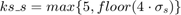

Bilateral Filtering
We used a spatial gaussian kernel of size  and further converted it into an odd value by adding 1 if required.
All images (original, corrupted and resultant) were linearly stretched so that the intensities fell in the range [0,1]. Comparisions between images were made after this step.
The optimal values of and for the input images were found to be:
- barbara - =0.55 and =3.3
- grassNoisy - =0.54 and =10
- honeyCombReal_Noisy - =0.6 and =1.0
tic; disp('Input : grass.png'); x = imread('../data/grass.png'); x = im2single(x); S = myBilateralFiltering(x, 0.54, 10, false); % save images save(['../images/grassNoisy.mat'], '-struct', 'S'); disp('With 0.9*sigma_s and sigma_i'); myBilateralFiltering(x, 0.486, 10, false); disp('With 1.1*sigma_s and sigma_i'); myBilateralFiltering(x, 0.594 ,10, false); disp('With sigma_s and 0.9*sigma_i'); myBilateralFiltering(x, 0.54, 9, false); disp('With sigma_s and 1.1*sigma_i'); myBilateralFiltering(x, 0.54, 11, false); toc; tic; disp('Input : honeyCombReal.png'); x = imread('../data/honeyCombReal.png'); x = im2single(x); S = myBilateralFiltering(x, 0.6, 1, false); % save images save(['../images/honeyCombReal.mat'], '-struct', 'S'); disp('With 0.9*sigma_s and sigma_i'); myBilateralFiltering(x, 0.54, 1, false); disp('With 1.1*sigma_s and sigma_i'); myBilateralFiltering(x, 0.66, 1, false); disp('With sigma_s and 0.9*sigma_i'); myBilateralFiltering(x, 0.6, 0.9, false); disp('With sigma_s and 1.1*sigma_i'); myBilateralFiltering(x, 0.6, 1.1, false); toc; tic; disp('Input : barbara.mat'); x = load('../data/barbara.mat'); S = myBilateralFiltering(x.imageOrig, 0.55, 3.3, false); % save images save(['../images/barbara.mat'], '-struct', 'S'); disp('With 0.9*sigma_s and sigma_i'); myBilateralFiltering(x.imageOrig, 0.495, 3.3, false); disp('With 1.1*sigma_s and sigma_i'); myBilateralFiltering(x.imageOrig, 0.605, 3.3, false); disp('With sigma_s and 0.9*sigma_i'); myBilateralFiltering(x.imageOrig, 0.55, 2.97, false); disp('With sigma_s and 1.1*sigma_i'); myBilateralFiltering(x.imageOrig, 0.55, 3.63, false); toc;
Input : grass.png RSMD for sigma_s = 0.54 and sigma_i = 10 => 0.036503 With 0.9*sigma_s and sigma_i RSMD for sigma_s = 0.486 and sigma_i = 10 => 0.037702 With 1.1*sigma_s and sigma_i RSMD for sigma_s = 0.594 and sigma_i = 10 => 0.036823 With sigma_s and 0.9*sigma_i RSMD for sigma_s = 0.54 and sigma_i = 9 => 0.036506 With sigma_s and 1.1*sigma_i RSMD for sigma_s = 0.54 and sigma_i = 11 => 0.036501 Elapsed time is 50.002176 seconds. Input : honeyCombReal.png RSMD for sigma_s = 0.6 and sigma_i = 1 => 0.035986 With 0.9*sigma_s and sigma_i RSMD for sigma_s = 0.54 and sigma_i = 1 => 0.036045 With 1.1*sigma_s and sigma_i RSMD for sigma_s = 0.66 and sigma_i = 1 => 0.037507 With sigma_s and 0.9*sigma_i RSMD for sigma_s = 0.6 and sigma_i = 0.9 => 0.036193 With sigma_s and 1.1*sigma_i RSMD for sigma_s = 0.6 and sigma_i = 1.1 => 0.03585 Elapsed time is 196.182917 seconds. Input : barbara.mat RSMD for sigma_s = 0.55 and sigma_i = 3.3 => 0.046507 With 0.9*sigma_s and sigma_i RSMD for sigma_s = 0.495 and sigma_i = 3.3 => 0.04595 With 1.1*sigma_s and sigma_i RSMD for sigma_s = 0.605 and sigma_i = 3.3 => 0.048731 With sigma_s and 0.9*sigma_i RSMD for sigma_s = 0.55 and sigma_i = 2.97 => 0.046513 With sigma_s and 1.1*sigma_i RSMD for sigma_s = 0.55 and sigma_i = 3.63 => 0.046503 Elapsed time is 806.098608 seconds.